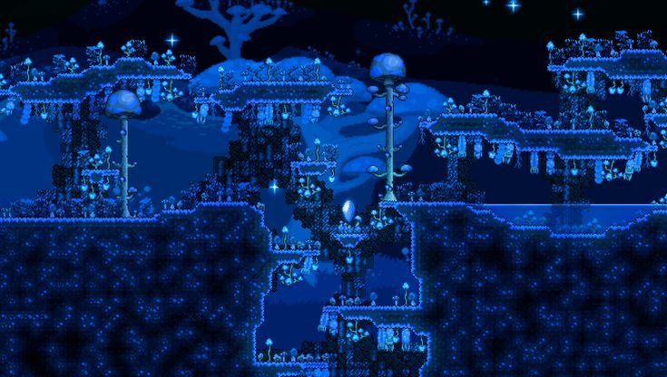
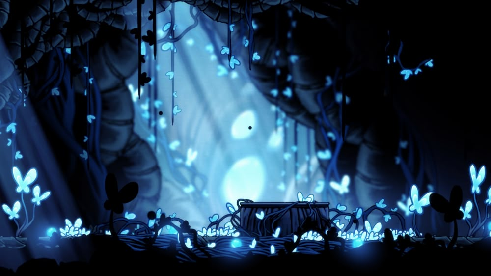
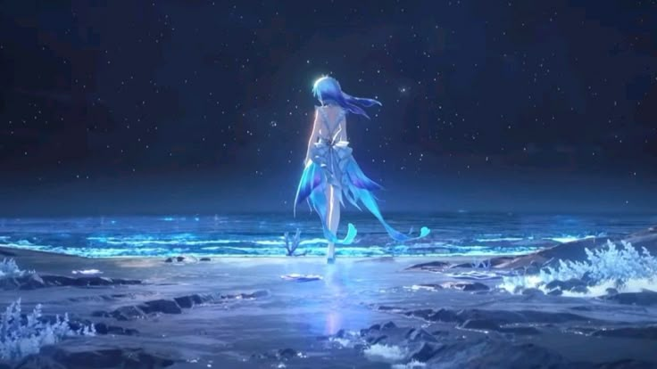

Destiny 2 is a free-to-play online first-person shooter video game developed by Bungie. It was originally released as a pay-to-play game in 2017 for PlayStation 4, Xbox One, and Windows.
Games

Destiny 2

Terraria
Terraria is a 2011 action-adventure video game developed by Re-Logic and published by 505 Games. As a sandbox game, Terraria has no set goals.

Hollow Knight
Hollow Knight is a 2017 Metroidvania video game developed and published by Australian independent developer Team Cherry. The player controls a nameless insectoid warrior in exploring Hallownest, a fallen kingdom plagued by a supernatural disease created by a god known as the Radiance.

Wuthering Waves
Wuthering Waves is a 2024 free-to-play open world action role-playing game developed and published by Kuro Games. First revealed on March 23, 2022, it was initially inspired by Death Stranding with the aim to create a post-apocalyptic world where players can experience the fusion of new and old civilizations.